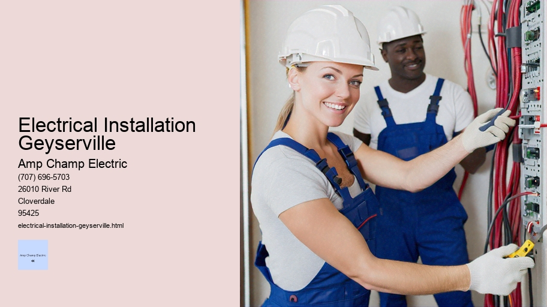

News
Electrical Installation Healdsburg
Electrical Installation Healdsburg
Electrical Installation Santa Rosa
Electrical Installation Cloverdale
Electrical Installation Geyserville
Electrical Installation Windsor
Maintenance and Repair Services Healdsburg
Maintenance and Repair Services Healdsburg
Maintenance and Repair Services Santa Rosa
Maintenance and Repair Services Cloverdale
Maintenance and Repair Services Geyserville
Maintenance and Repair Services Windsor
Electrical Safety Inspections Healdsburg
Electrical Safety Inspections Healdsburg
Electrical Safety Inspections Santa Rosa
Electrical Safety Inspections Cloverdale
Electrical Safety Inspections Geyserville
Electrical Safety Inspections Windsor
Energy Efficiency Upgrades Healdsburg
Energy Efficiency Upgrades Healdsburg
Energy Efficiency Upgrades Santa Rosa
Energy Efficiency Upgrades Cloverdale
Energy Efficiency Upgrades Geyserville
Energy Efficiency Upgrades Windsor
Specialty Electrical Services Healdsburg
Specialty Electrical Services Healdsburg
Specialty Electrical Services Santa Rosa
Specialty Electrical Services Cloverdale
Specialty Electrical Services Geyserville
Specialty Electrical Services Windsor
About Us
Contact Us

Electrical Installation Geyserville
Surge Protection
Title: The Intricacies of Electrical Installation: Harnessing the Power Safely and Efficiently
Introduction:
Electrical installation is an essential component of modern life, a complex process intricately woven into the fabric of our daily existence. It's a harmonious blend of science, engineering, and craftsmanship that enables us to harness electricity—a force so vital that without it, the rhythm of contemporary society would stumble into disarray. This essay delves into the nuances of electrical installations, exploring how they power our homes, industries, and cities while emphasizing safety and efficiency.
Understanding Electrical Installation:
At its core, electrical installation involves setting up systems to carry electric current for lighting, heating, and operating appliances. It's a meticulous task requiring skilled professionals—electricians—who ensure that each connection is secure and each circuit works harmoniously within the broader network.
The process begins with planning. Engineers design circuits tailored to meet specific needs while adhering to stringent regulations. Blueprints come alive as electricians lay out wires, install outlets, fit circuit breakers, and connect switches following these designs meticulously.
Safety in Electrical Installation:
Safety reigns supreme in electrical work due to the inherent dangers posed by electricity. Installations must comply with national standards such as the National Electrical Code (NEC) in the United States or others like IEC internationally. These regulations dictate everything from wire thickness to load capacity ensuring that every component can handle its electrical burden without risk.
Electricians also employ protective devices such as Ground Fault Circuit Interrupters (GFCIs) and Residual Current Devices (RCDs) which are designed to prevent electrocution by cutting off power when a fault is detected. Personal protective equipment (PPE), including insulated gloves and goggles, further shields installers from potential hazards during their work.
Efficiency in Modern Installations:
Modern electrical installations are not just safe; they are efficient too. Energy-saving technologies like LED lighting fixtures and smart thermostats are increasingly common features designed to reduce consumption while maintaining functionality.
Smart home systems represent another leap forward in efficiency. They integrate various household devices allowing users to manage energy use remotely through smartphones or tablets—turning lights off when no one is in a room or adjusting heating based on occupancy patterns.
Environmental Considerations:
As environmental concerns become more pressing, eco-friendly practices have been integrated into electrical installations. Use of renewable energy sources like solar panels has grown significantly offering homeowners opportunities for sustainable living right from their rooftops.
In addition innovative materials such as halogen-free wiring provide safer alternatives by reducing toxic emissions during fires thus contributing towards environmentally responsible installation practices.
Conclusion:
Electrical installation stands at the intersection between technological advancement human skillset safety protocols energy efficiency considerations all coming together create robust networks distribute electricity reliably safely across numerous applications From simple light bulbs sophisticated industrial machinery proper setup ensures seamless operation today's electrified world Moreover by incorporating green technologies ethical practices electrical sector continues evolve demonstrate commitment sustainable development In essence this field remains dynamic ever-changing landscape where precision meets innovation driving forces behind comfortable convenient electrified lifestyles we enjoy today
Residential wiring and socket installation are two fundamental aspects of modern home construction and renovation that enable the safe distribution and use of electrical power within a household. The process involves careful planning, precise execution, and adherence to strict safety codes and regulations to ensure that electricity can be utilized conveniently and safely by the occupants for their various needs—ranging from lighting to powering appliances.
The journey of residential wiring begins with understanding the layout of the home and determining the specific electrical needs based on room function, appliance requirements, and homeowner preferences. Professional electricians typically undertake this task due to its technical nature. They create a comprehensive wiring diagram that outlines circuit paths, socket locations, switch placements, service panels, and grounding systems.
Wiring is not just about laying down cables; it is an art that requires knowledge of electrical principles as well as local building codes. The choice of materials is also crucial—a typical residential wiring project will utilize insulated copper wires with varying thicknesses (gauges) appropriate to the current load they will carry. These wires are run through protective conduits or secured in place within walls, ceilings, or floors to protect them from damage while hiding them from view for aesthetic purposes.
Socket installation takes this infrastructure one step further by providing accessible points where electrical devices can be plugged in. Sockets need to be strategically placed throughout a residence based on potential usage patterns—for example, in a kitchen you might find multiple sockets above countertops for small appliances while living areas may have sockets positioned at intervals along walls for convenience.
When installing sockets—or outlets as they're sometimes called—an electrician must consider several factors: the type of outlet needed (standard duplex receptacles are common but there are also specialized ones like GFCI or USB outlets), the amperage rating required (usually 15 or 20 amps in North American homes), mounting height (compliant with ADA standards if necessary), and location with respect to moisture sources such as sinks which would necessitate special waterproofing measures.
Safety is paramount in any electrical project. This includes ensuring all components meet national standards set by organizations like the National Electrical Code (NEC) in the United States.
Surge Protection
It also involves installing ground fault circuit interrupters (GFCIs) where needed to prevent electrocution hazards in wet areas like bathrooms or kitchens.
Furthermore, circuit breakers play an essential role—they act as guardians against overloads by automatically cutting off power when a circuit draws too much current. A well-designed system will segment wiring into different circuits so that if one trips due to overload or short-circuiting conditions it doesn't plunge an entire home into darkness.
In modern installations smart technology integration is becoming increasingly popular allowing residents greater control over their energy consumption through programmable switches timers sensors even remote-controlled systems via smartphones tablets These advancements add another layer complexity considerations professionals designing implementing systems
As we can see residential wiring socket installation isn't simply matter connecting wires fixing up plugs rather systematic approach ensuring reliable efficient safe transfer energy within our homes From initial planning phase right through final inspection stages every action taken aims provide homeowners peace mind comes knowing their electrical setup done right As always though these tasks should left qualified who know exactly what they're doing because when comes dealing electricity there's no room error
electrical-installation-healdsburg.html
electrical-installation-santa-rosa.html
electrical-installation-cloverdale.html
electrical-installation-geyserville.html
electrical-installation-windsor.html
maintenance-and-repair-services-healdsburg.html
maintenance-and-repair-services-santa-rosa.html
maintenance-and-repair-services-cloverdale.html
maintenance-and-repair-services-geyserville.html
maintenance-and-repair-services-windsor.html
electrical-safety-inspections-healdsburg.html
electrical-safety-inspections-santa-rosa.html
electrical-safety-inspections-cloverdale.html
electrical-safety-inspections-geyserville.html
electrical-safety-inspections-windsor.html
energy-efficiency-upgrades-healdsburg.html
energy-efficiency-upgrades-santa-rosa.html
energy-efficiency-upgrades-cloverdale.html
energy-efficiency-upgrades-geyserville.html
energy-efficiency-upgrades-windsor.html
specialty-electrical-services-healdsburg.html
specialty-electrical-services-santa-rosa.html
specialty-electrical-services-cloverdale.html
specialty-electrical-services-geyserville.html
specialty-electrical-services-windsor.html
privacy-policy.html
sitemap.html
sitemap.xml
about-us.html
feed.xml
Commercial building electrical layout design
Title: The Art and Science of Commercial Building Electrical Layout Design
The intricate dance between functionality, safety, and efficiency plays out in the concealed arteries and veins of commercial buildings – their electrical systems. The design of a commercial building's electrical layout is a critical aspect that requires meticulous planning, a deep understanding of electrical principles, and an acute appreciation for the building's purpose. This essay will delve into the various facets of commercial building electrical layout design, exploring its importance, challenges, processes, and standards.
**Importance of Electrical Layout Design in Commercial Buildings**
In the heart of every commercial establishment lies an invisible yet vital network – its electrical system. A well-designed electrical layout ensures that power is distributed efficiently throughout the building to support lighting, heating and cooling systems, office equipment, elevators, security devices, and other essential services. It affects not just operational efficiency but also impacts safety protocols by reducing risks associated with electricity such as fires or system failures.
Furthermore, with growing environmental consciousness and stringent regulations around energy consumption and sustainability practices like LEED certification requirements for green buildings), it becomes imperative to design electrical layouts that are not only safe but also energy-efficient.
**Challenges Faced During Electrical Layout Design**
Designing an electrical layout for a commercial space comes with its unique set of challenges:
1.
Master Electrician
Balancing Current Needs with Future Flexibility: As businesses evolve so do their power needs; hence designers must anticipate future expansions or changes.
2. Compliance with Codes: National Electric Code (NEC) among others sets strict guidelines which must be adhered to ensure safety.
3. Integration with Other Systems: The interplay between different building systems such as HVAC (Heating Ventilation Air Conditioning), plumbing etc., needs careful consideration.
4. Spatial Constraints: Often there is limited space for running conduits & placing panels which calls for creative solutions.
**Process of Commercial Building Electrical Layout Design**
The process usually starts with understanding client requirements followed by assessing the architectural plans where preliminary load estimates are calculated considering all potential uses within each area or zone within the building (like offices kitchens restrooms). Here’s how it unfolds:
1. Site Analysis & Load Calculations: Initial site assessments are conducted along side detailed calculations regarding load demands at peak usage times.
2. Schematic Design Phase: In this phase conceptual drawings are created highlighting major components panel locations feeder routes emergency systems etc.
3. Detailed Design Phase & Modeling: Once schematics approved detail designs produced using CAD software BIM (Building Information Modeling) tools providing 3D visualization potential problems can addressed before construction begins.
4. Coordination Review & Adjustments: Constant communication collaboration necessary between architects engineers contractors ensure seamless integration all elements ensuring nothing overlooked from physical obstructions code violations prior actual installation takes place.
**Standards Governing Electrical Layouts**
Electrical engineers working on commercial projects have to adhere strictly to codes standards established industry bodies such NEC International Building Code (IBC) local jurisdictional codes more specific industry-related standards hospitality healthcare facilities data centers etc., These regulations cover everything from minimum number outlets per square footage maximum distances between them kind materials used wiring methods accessibility maintenance considerations among many other details.
**Conclusion**
The design of a commercial building's electrical layout is far more than just stringing wires through walls ceilings; it’s about crafting robust backbone powers modern commerce while keeping occupants safe harnessing technology maximize efficiency minimize waste Thus blending art science meticulous attention detail pragmatism formulates successful outcome - one where lights stay on machines hum tranquility seamlessly sidestepping chaos hidden behind walls floors above ceilings essential yet unseen circulatory system pulses reliably business world spins onward unabated
Lighting fixture installation
Title: The Art and Science of Lighting Fixture Installation
Light is not just a mere functional necessity; it is an integral component that shapes our perception of space, enhances mood, and plays a crucial role in the aesthetics of any environment. Whether it’s the soft glow that adds warmth to a cozy reading nook or the bright illumination that transforms a kitchen into a vibrant cooking haven, lighting fixtures are pivotal in bringing these experiences to life. This essay delves into the nuanced process of lighting fixture installation—a task that intertwines technical skill with artistic sensibility.
The journey of installing a lighting fixture begins long before the actual physical work takes place. It starts with the design phase, where one must consider the purpose of light in a given space. Is it to highlight artwork on the walls? To create an ambiance for dining? Or simply to provide clear visibility in high-traffic areas? The type of fixture chosen—be it chandeliers, pendants, sconces, or recessed lights—will depend on these functional and aesthetic objectives.
Under Cabinet Lighting
Once the appropriate fixtures are selected, preparation for installation can commence. This involves ensuring that all necessary tools and equipment are at hand: wire strippers, screwdrivers, drills, ladders, and safety gear like gloves and glasses. Pre-installation also includes turning off power to avoid electrical hazards—an essential step that underscores safety as paramount throughout this process.
Installation itself requires a blend of precision and patience. For ceiling-mounted fixtures, one must anchor them securely to support their weight while connecting wires correctly to guarantee both functionality and fire prevention. It's often advisable to consult or hire a certified electrician for complex installations involving new wiring or circuits.
However straightforward or intricate the installation might be, there is always room for creativity during this phase. The positioning of each fixture can dramatically affect how light cascades across surfaces or highlights certain elements within a room. Installers must be mindful of angles and heights while remaining flexible enough to adjust plans when real-world conditions demand it.
Post-installation provides an opportunity for fine-tuning. Once fixtures are mounted and powered on, observing how they interact with space can lead us back up the ladder for adjustments—aiming directional lights more precisely or experimenting with different bulbs (LEDs versus halogens) until achieving desired effects.
The final touch in this illuminating journey is adding dimmers if needed—for they gift users control over intensity thus enabling transitions from vibrant task lighting to subdued ambient tones suited for relaxation—all at the slide or turn of a switch.
In conclusion, installing lighting fixtures may seem purely mechanical but peeling back its layers reveals something much more profound—an art form where technology meets human emotion through manipulation of light's transformative power. From careful planning and execution to creative problem-solving along every step—the installation process demands respect both as craftmanship needing technical expertise and as an expressive act capable of shaping everyday experiences through illumination’s subtle dance within our lives.
Electrical panel and circuit breaker setup
The heart of a home's electrical system is its electrical panel, often referred to as the breaker box. This critical component serves as the central hub where power from the utility company is distributed into various circuits that run throughout the property to supply electricity to outlets, lights, and appliances. Understanding an electrical panel and circuit breaker setup is essential for ensuring not only the efficient operation of a household’s electrical system but also for maintaining safety standards.
At first glance, an electrical panel might seem intimidating with its array of switches and wires. However, its design is logically structured to facilitate both safety and ease of use. The main components include the main breaker, individual circuit breakers, bus bars, neutral bars, and grounding bars.
The main breaker is a large switch found at the top or bottom of the panel and serves as a master cut-off for power to the home. In case of an emergency or when service work needs to be performed on the system, shutting off this main breaker stops power flow to all circuits. It also acts as an overall safety device by tripping if the total current draw exceeds its rated capacity.
Individual circuit breakers are responsible for controlling power to specific areas or appliances within your home. Each one corresponds to a particular circuit wired throughout your house. When there's too much current flowing through that circuit—perhaps due to a short-circuit or an overload—the breaker trips, cutting off electricity to that line until the issue can be safely addressed. This prevents overheating and potential fires.
Bus bars in the panel carry power from the utility service line and distribute it through individual breakers. Neutral bars provide a return path for current back to your electric utility service while ground bars link each circuit back to earth ground—a vital part of any safe electrical system designed to handle excess electricity in case of faults.
Modern homes typically employ one or two types of circuit breakers: single-pole (handling 120 volts) which control most lighting fixtures and outlets; and double-pole (handling 240 volts), which typically serve major appliances like dryers or ovens that require more power.
Electrical Cost Estimation
Installation and maintenance of an electric panel should always be handled by licensed professionals because incorrect handling can result in serious injuries or fire hazards owing to high voltage exposure. Electricians follow strict codes which dictate everything from how high off the floor panels must be installed (usually around eye level) so they are easily accessible without being directly reachable by small children, down to wire colors used based on their function ensuring uniformity across systems making future repairs safer.
In addition to professional installation, regular inspection ensures continued reliability; over time connections may loosen due possibly thermal expansion/contraction cycles leading potentially dangerous situations if not addressed promptly by periodic tightening check-ups recommended at least once every couple years depending upon age condition usage patterns etcetera along with immediate action whenever signs malfunction appear such as frequent tripping strange noises burning smells indicating need urgent attention before minor issues become major problems possibly resulting costly damages even personal harm those within dwelling vicinity thereof.
Knowing how your home's electrical panel works provides you with valuable information about your property’s functionality while giving you peace mind understanding built-in protections designed keep everyone safe against possible hazards inherent dealing powerful forces nature manipulated mankind’s convenience yet respect caution always warranted when comes handling them properly responsibly sustainable manner future generations enjoy same benefits comforts today’s society takes granted everyday life thanks largely unseen yet vitally important systems like those found behind metal door labeled "Electric Panel" every modern residence worldwide today tomorrow beyond.
Electrical Installation Windsor
Grounding systems and safety measures
Grounding Systems and Safety Measures: Ensuring Electrical Protection
In the tapestry of modern electrical infrastructure, grounding systems emerge as a pivotal element for ensuring safety and operational integrity. These systems serve as the invisible guardians that protect both human lives and sensitive equipment from the potential dangers associated with electricity. Grounding—or earthing, as it is known in some regions—is a fundamental aspect of any electrical installation, designed to provide a safe path for electric current to dissipate into the earth, thereby mitigating risks such as electric shock, fire hazards, and equipment damage.
Appliance Wiring
The concept of grounding is based on providing a direct physical connection between electrical circuits or equipment and the ground (earth). This connection is typically achieved using conductive materials like copper or aluminum wires connected to ground rods driven deep into the soil or to metal plates buried underground. The primary objective of this system is twofold: first, to stabilize voltage levels during normal operations; second, to provide an alternative pathway for fault currents—currents that flow outside their intended path due to insulation failure or other issues—to safely enter the earth without passing through people or causing damage.
Safety measures in grounding systems are meticulously engineered according to rigorous standards and regulations developed by organizations such as the National Electrical Code (NEC) in the United States or the International Electrotechnical Commission (IEC) internationally. These guidelines dictate specific requirements for grounding practices in residential, commercial, industrial, and utility applications.
One crucial component of these safety measures is ensuring proper installation. A poorly implemented grounding system can be as hazardous as having no ground at all. Therefore, skilled professionals must perform installations following strict protocols that account for factors such as soil resistivity—which affects how well electricity dissipates into the earth—and potential corrosion of ground rods over time.
Another important measure involves regular inspection and maintenance. Over time, connections may loosen or corrode; wires can degrade; and changes in site conditions might alter soil resistivity characteristics. Scheduled checks carried out by qualified personnel help ensure all aspects of a grounding system continue functioning correctly throughout its operational life.
Moreover, additional devices enhance safety further when integrated with grounding systems. For example:
1. Ground Fault Circuit Interrupters (GFCIs): These devices quickly disconnect power if they detect an imbalance between incoming and outgoing current on a circuit—a sign that some electricity may be leaking potentially through someone's body.
2. Surge Protectors: While not directly part of a grounding system per se, surge protectors rely on good earthing connections to divert excess voltage from transient surges—such spikes often result from lightning strikes or switching events within power grids—away from sensitive electronics.
3. Bonding: This process involves connecting non-current carrying metallic parts like pipes or appliance housings together and then to the ground system so there's no potential difference between them which could cause shocks if touched simultaneously.
Education also plays an indispensable role in safety concerning grounding systems. Electricians need thorough training regarding proper techniques while consumers should understand basic concepts—for instance recognizing GFCI outlets—to make informed decisions about their own safety around household electricity.
Lastly but certainly not leastly comes legislation enforcing compliance with established codes and conducting periodic updates reflecting new knowledge technology advances demands society places upon electrical infrastructure—all geared towards maintaining highest possible standards protection against dangers posed by misuse mishandling energized environments.
In conclusion while invisible most times effective grounded network paired comprehensive array safeguard mechanisms stands bulwark defense chaotic unpredictable nature raw power we harness daily lives From simple fuse home massive substation feeding metropolis combined efforts design implementation maintenance education policy converge single goal keep us secure face ever-present electrical hazards It testament human ingenuity dedication these unseen yet essential elements our electrified world continue operate seamlessly largely unnoticed until needed—whereupon they spring silent vigilance guard lives property alike utmost reliability precision
About
About Geyserville
Check our other pages :
Energy Efficiency Upgrades Geyserville
Energy Efficiency Upgrades Healdsburg
Specialty Electrical Services Cloverdale
Electrical Safety Inspections Geyserville
Maintenance and Repair Services Windsor
Frequently Asked Questions
What types of electrical installation services are available in Geyserville?
In Geyserville, electricians offer a range of services including residential and commercial wiring, panel upgrades, lighting installation, generator installation, EV charger installation, and routine maintenance.
How do I choose the right electrician for my project in Geyserville?
Look for licensed and insured electricians with good reviews or recommendations. Ensure they have experience with your specific type of project, provide clear estimates, and can offer references upon request.
Are there any local codes or regulations in Geyserville that I should be aware of before starting an electrical project?
Yes, Geyserville follows Californias building code and any local amendments. A qualified local electrician will be up-to-date with these regulations to ensure that all work is compliant with safety standards.
How much does it typically cost for electrical installation services in Geyserville?
The cost varies depending on the complexity of the job, materials needed, and labor involved. It’s best to get a detailed quote from a few different service providers to understand the average costs for your particular project.
Can an electrician help me make my home more energy efficient?
Absolutely. An electrician can recommend and install energy-saving devices such as LED lighting, programmable thermostats, energy-efficient appliances, and smart home systems that can contribute to reducing your overall energy consumption.
Electrical Installation Geyserville